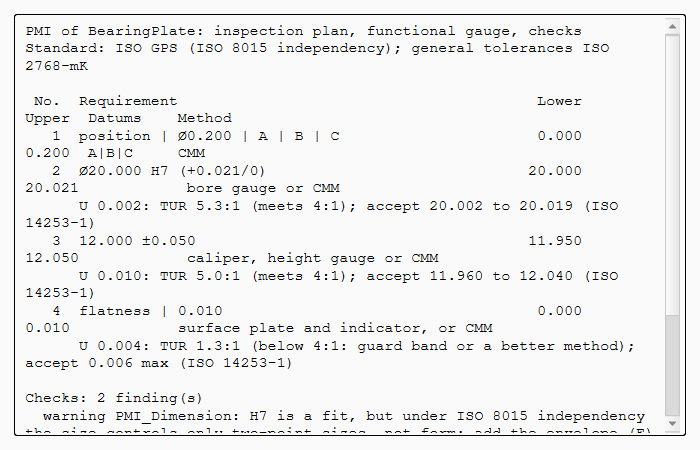
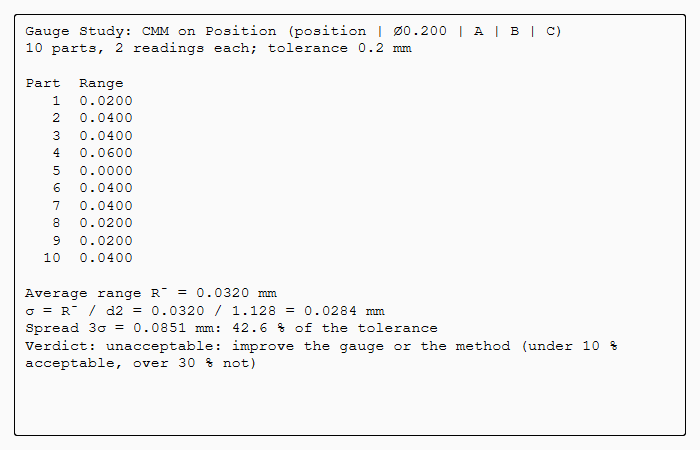

Tutorial AB: Measurement capability
| Books |
Drake, Dimensioning and Tolerancing Handbook, ch. 20 (measurement systems analysis) and ch. 25 (gauge repeatability and reproducibility) |
| Standards |
ISO 14253-1 (decision rules), ANSI/NCSL Z540.3 (test uncertainty ratio), AIAG MSA |
| You learn |
Measurement uncertainty U on PMI, TUR, guard-banded acceptance limits, Analysis › Gauge Study |
| Sizes |
A plate 60 × 40 × 12 with a bore Ø20 H7 |
A tolerance is only as good as the measurement that checks it. A caliper reading of 12.04 on a 12 ±0.05 thickness does not prove that the part is good. The inspection method’s uncertainty belongs with the characteristic.
The inspection methods' uncertainties are ours. The first gauge study uses the ranges of Drake’s worked example.
Step by step
1. The plate
The plate is made by script. Its datums are A, B and C, the bore is positioned Ø0.2 to A|B|C (RFS, as in Drake’s gauge study), and the general tolerances are ISO 2768-mK.
2. The characteristics and their methods
In each PMI dialog, Measurement uncertainty U is the expanded uncertainty of the method:
| Characteristic | U | Method |
|---|---|---|
Bore Ø20 H7 |
0.002 |
bore gauge |
Thickness 12 ±0.05 |
0.01 |
micrometer |
Flatness 0.01 of the top |
0.004 |
surface plate and indicator |
3. The inspection plan
PMI › Inspection Plan adds a TUR and the acceptance limits to each characteristic:
U 0.002: TUR 5.2:1 (meets 4:1); accept 20.002 to 20.019 (ISO 14253-1) U 0.010: TUR 5.0:1 (meets 4:1); accept 11.960 to 12.040 (ISO 14253-1) U 0.004: TUR 1.2:1 (below 4:1: guard band or a better method); accept 0.006 max (ISO 14253-1)
A bore reading of 20.020 is inside the tolerance but within U of its limit, so it proves nothing. The flatness check uses 80 % of its tolerance on uncertainty: accept up to 0.006, or measure it better.

4. Drake’s gauge study
Select the position frame, then Analysis › Gauge Study: gauge CMM, ten parts with two readings each, and spread 3 sigma (Drake ch. 25).
The average range is 0.032, so σ = 0.032 / 1.128 = 0.0284 and 3σ = 0.085: 42.6 % of the 0.2 tolerance.
That is over 30 %, so the measurement system is not acceptable, as in the book.
With AIAG’s 6σ the share would be twice that.

The replay
| # | In the book (NX) | In FreeCAD NX-Style | Result | Notes |
|---|---|---|---|---|
AB1 |
The bearing plate: a bore Ø20 positioned Ø0.2 to A|B|C (RFS, as in Drake’s gauge study) |
modelled by script, datums and frame made as in tutorial T |
differs |
datum feature A; datum feature B; datum feature C; position | Ø0.200 | A | B | C |
AB2 |
Rapid Dimension: the bore Ø20 H7, checked with a bore gauge, U = 0.002 |
1 face(s) selected + ribbon 'PMI › Dimension > Rapid Dimension'; 'H7' typed, measurement uncertainty 0.002 typed; MB2 = OK |
differs |
Ø20.000 H7 (+0.021/0) |
AB3 |
Rapid Dimension: the thickness 12 ±0.05, measured with a micrometer, U = 0.01 |
2 face(s) selected + ribbon 'PMI › Dimension > Rapid Dimension'; ±0.05 and the uncertainty typed; MB2 = OK |
differs |
12.000 ±0.050 |
AB4 |
Feature Control Frame: the top face flat to 0.01, on a surface plate with an indicator, U = 0.004 |
1 face(s) selected + ribbon 'PMI › Annotation > Feature Control Frame'; Flatness, 0.01, the uncertainty typed; MB2 = OK |
differs |
flatness | 0.010 |
AB5 |
Inspection Plan: each method’s TUR and the ISO 14253-1 acceptance limits |
ribbon 'PMI › Inspection > Inspection Plan' |
differs |
the bore is accepted only from 20.002 to 20.019, the thickness from 11.960 to 12.040: the specification less U at each limit, so no part is accepted on a doubtful reading. The flatness check uses 80 % of its tolerance (TUR 1.25): accept up to 0.006, or find a better method. NX has no measurement capability in its PMI |
AB6 |
Gauge Study on the position Ø0.2: Drake’s worked example (ten parts, two readings each) |
the frame selected + ribbon 'Analysis › Tolerance > Gauge Study'; gauge, 20 readings and the spread typed; MB2 = OK |
differs |
average range 0.032, σ = 0.0284, 3σ = 0.085 mm: 42.6 % of the tolerance, unacceptable (Drake: 42.6 %, over 30 %). With AIAG’s 6σ it would be twice that |
AB7 |
Gauge Study on the bore Ø20 H7 with an air gauge |
the bore’s PMI selected + ribbon 'Analysis › Tolerance > Gauge Study'; readings typed; 6σ; MB2 = OK |
differs |
σ = 0.23 µm, 6σ uses 6.6 % of the 0.021 tolerance: acceptable. The study is kept in the part, beside the PMI it qualifies |
AB8 |
The bearing plate with its PMI |
render of the graphics window |
same |
6.5% of the view shows the part |
| Result | Means |
|---|---|
same |
The book’s NX steps work as written. |
differs |
It works, but the FreeCAD way is different; the notes say how. |
limit |
The book’s way fails in FreeCAD itself; a workaround follows in the next steps. |
missing |
FreeCAD has no such function; a stand-in follows. |
skipped |
Not replayed; the notes give the reason. |
FAILED |
Did not work. |
What differs from NX
NX’s PMI has no measurement uncertainty, TUR or gauge study; quality systems hold them. These tools are NX-Style’s (Inspection). The range method of one operator gives repeatability only; studies with several operators (reproducibility) are not implemented.